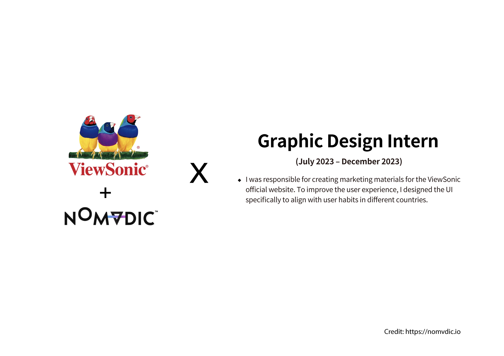
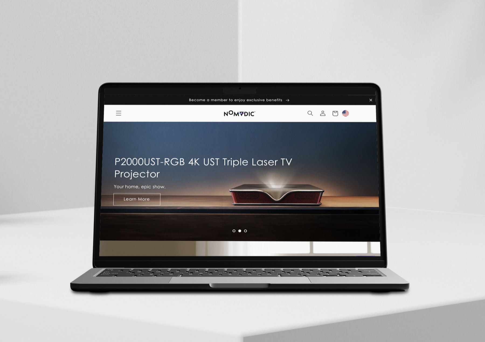
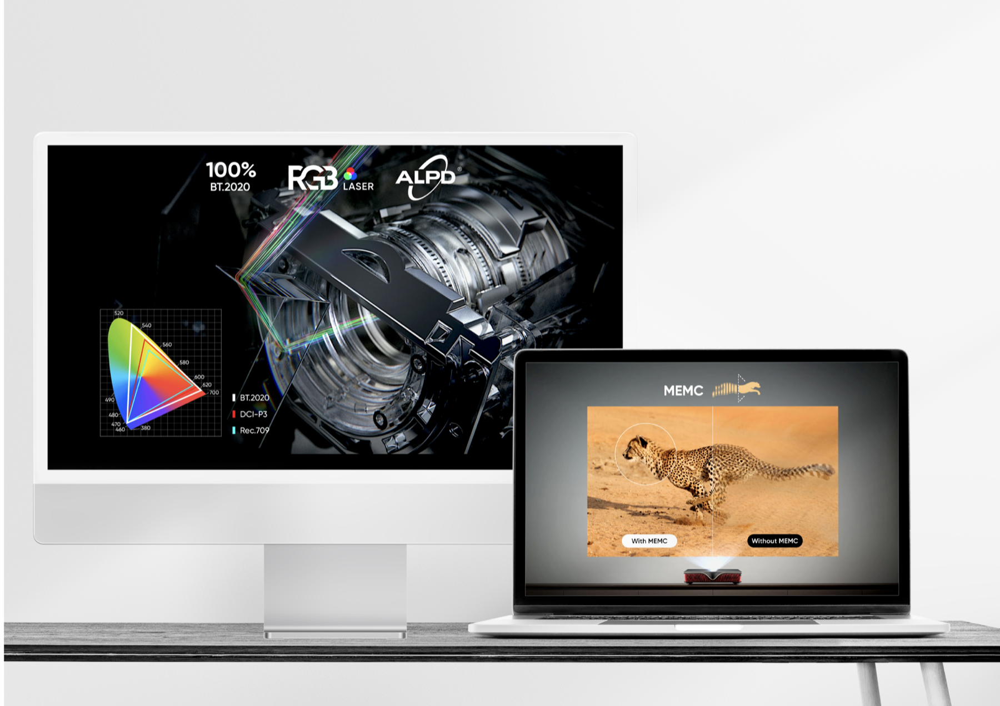

ViewSonic
Digital marketing visuals and region-adapted UI for ViewSonic's 4K / HDR displays across Amazon and the global site.
Overview
As a graphic design intern at ViewSonic, I built the visual storytelling layer for product listings on Amazon and for campaign pages on the official site — and adapted UI where a single global template didn't land the same way in every region's reading flow.
Same product, different windows.
A 4K monitor is a 4K monitor — but the way a North American shopper scans a product page is not the way a Taiwanese one does, and neither matches a German user's expectation for where specs appear in the scroll.
The internship gave me a crash course in reading behavior across markets, and in designing visual hierarchy that flexes with it.


Cinematic where it earns it, legible where it counts.
The hero imagery leans into the display's true strength — mountain dusks, film stills, game scenes where HDR ranges aren't decoration but the story. Spec tables stay matter-of-fact, set in a type hierarchy that reads the same on a phone as it does on a 32-inch screen.
Every layout was built with three breakpoints and two locales in mind from sketch.

Cross-cultural storefronts, one voice.
The pages shipped across ViewSonic's Amazon storefronts and the global site during the 2023 product cycle. More quietly, the internship shaped how I think about "brand" now — not a style, but a set of promises a visitor can feel in twenty seconds of scroll.